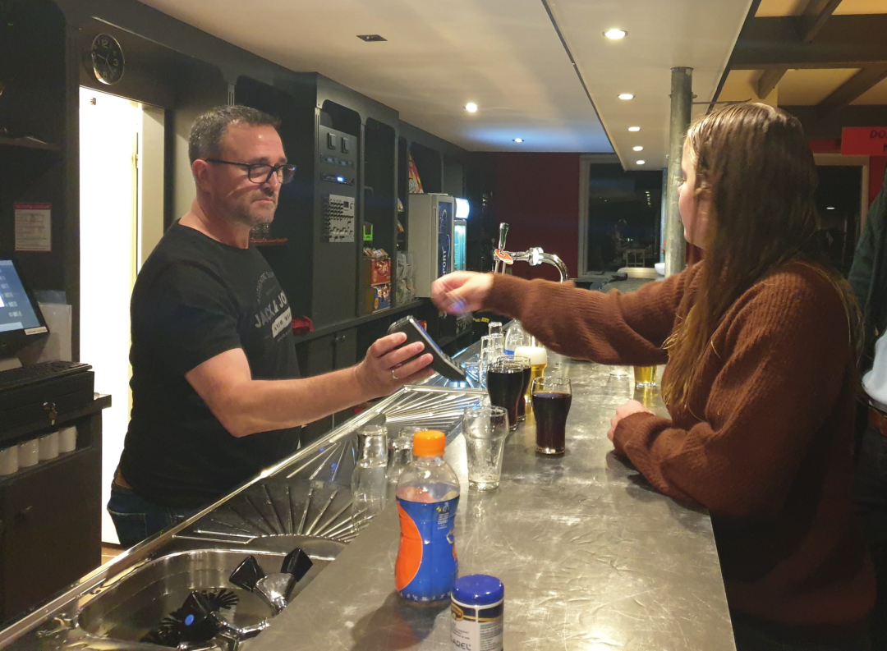
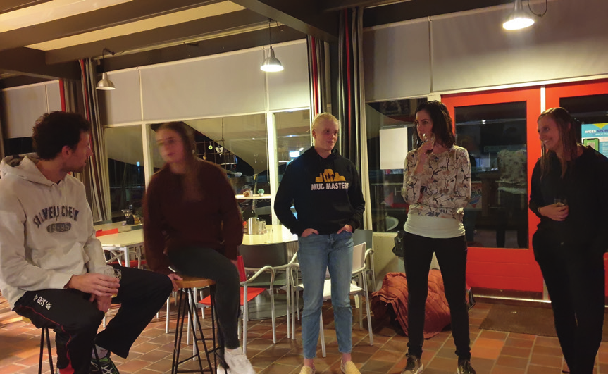

Zoals het
klokje thuis
tikt...
... tikt het nergens. Een club is geen club, zonder een sterke achterban. Juist in een periode waar corona
alles in de war schopt, zagen we de binding groeien. Hoe leuk is het dan om te laten weten dat de derde
helft, de gezellige vrijdagavond van DOS’46, weer terug van weggeweest is. We hebben niet alleen leden
die al van kleins af aan lid zijn, maar we blijven ook nieuwe leden verwelkomen en zien oud-leden weer
terugkomen. DOS’46 wordt niet alleen door haar leden gedragen, maar ook sponsoren dragen bij aan
het succes met hun kersverse, maar ook jarenlange support. Daar is DOS’46 trots op!
Wist je dat onze voorzitter, Haralt Lucas, frequent contact heeft met interne en externe ‘stakeholders’? Dan hebben we het
niet alleen over onze leden, vrijwilligers, sponsoren, commissies en het kernteam, maar denk ook aan de gemeente Meppel,
de politieke partijen, het KNKV, Stichting Airdome (SAN), andere sportverenigingen in Nijeveen/Meppel, de dorpsvereniging
en andere korfbalclubs in Nederland waarbij wij een sterke functie vanuit onze regio hebben.
Wellicht heb je het op de socials gezien of in de wandelgangen of via via
al gehoord, maar de derde helft, de
gezellige vrijdagavond van DOS’46 is
terug van weggeweest.
Op de vrijdagavonden wordt er eerst hard getraind,
vervolgd door een lekkere versnapering van
wisselende bartoppers

De vrijdagavondtraining is bedoeld voor leden van DOS’46
die geen vaste trainingsavond hebben, maar toch wel wekelijks een balletje willen gooien. De training staat altijd onder

leiding van een toptrainer. Er is dus volop variatie in
oefeningen en er wordt uiteraard altijd afgesloten
met een wedstrijdj
Na de training is de kantine geopend voor een hapje en
een drankje. Niet getraind, maar wel zin in een hapje en
drankje in de kantine? Gezellig, kom vooral langs!
Lijkt het je leuk om een keer mee te trainen? Wees van
harte welkom. Hoe meer zielen, hoe meer vreugde!